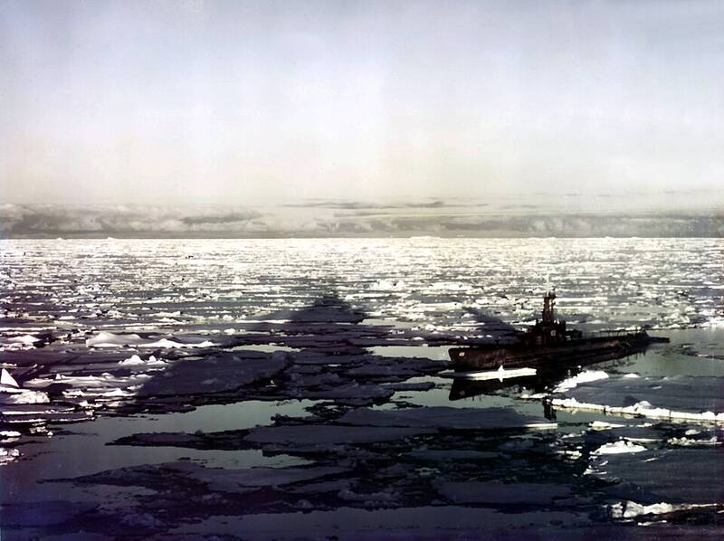

Little America IV
Bay of Whales, Ross Ice Shelf, 1947

The base Operation Highjump built in January 1947 on the Ross Ice Shelf, near the sites of Richard Byrd's earlier Little America camps. It was the expedition's main objective, and it lies on the opposite side of Antarctica from New Swabia, where the Nazi base of later legend was supposed to be. 1,2
Open in the interactive Watcher
Related
Sources
- Operation Highjump Wikipedia
- Hitler's Antarctic Fortress Unmasked (Brian Dunning) Skeptoid, episode 559, Feb. 21, 2017